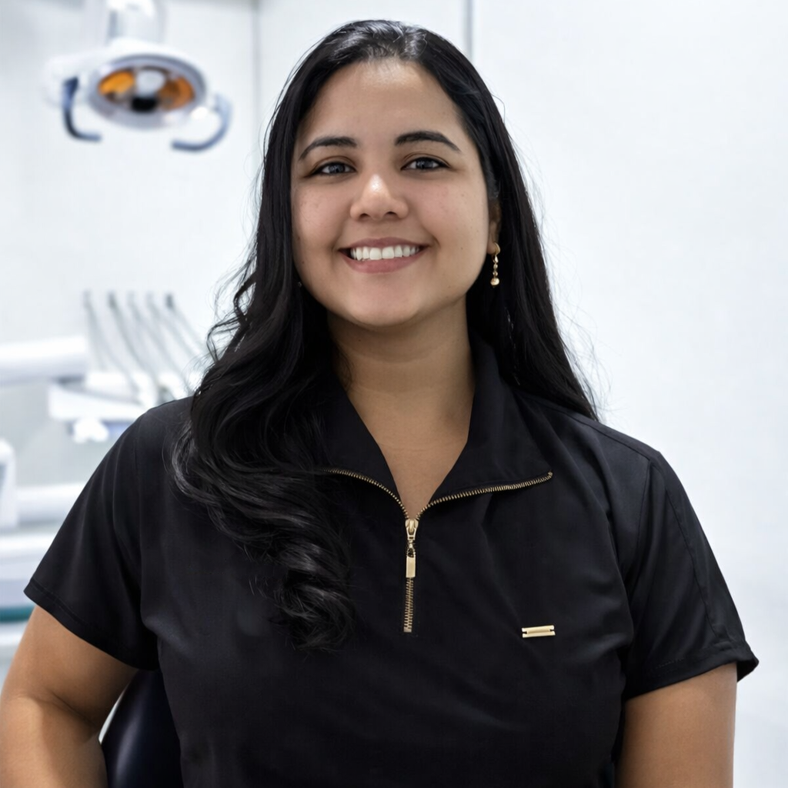
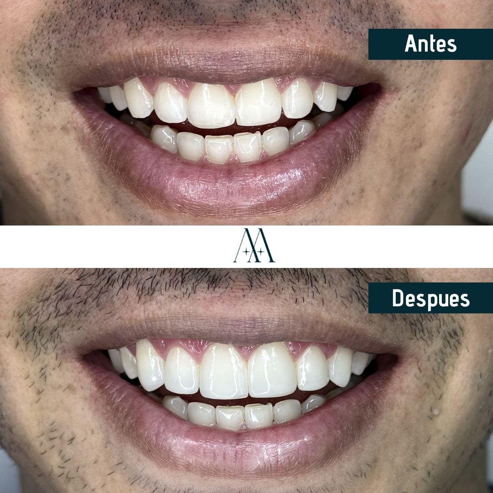
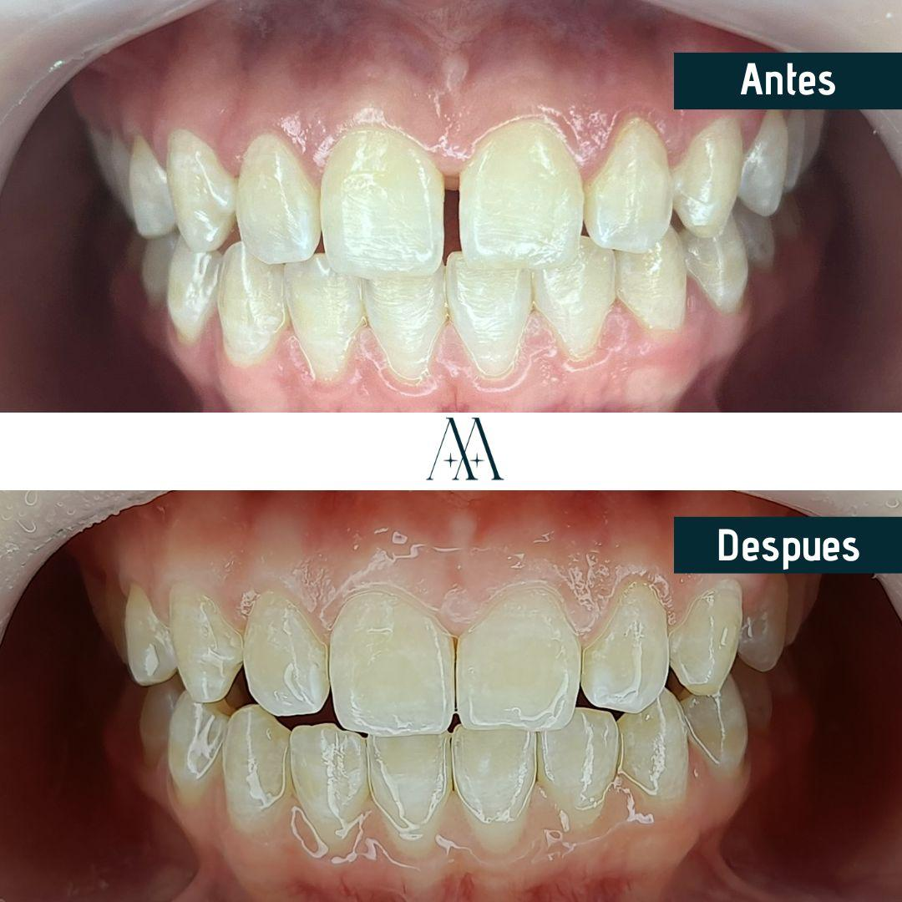
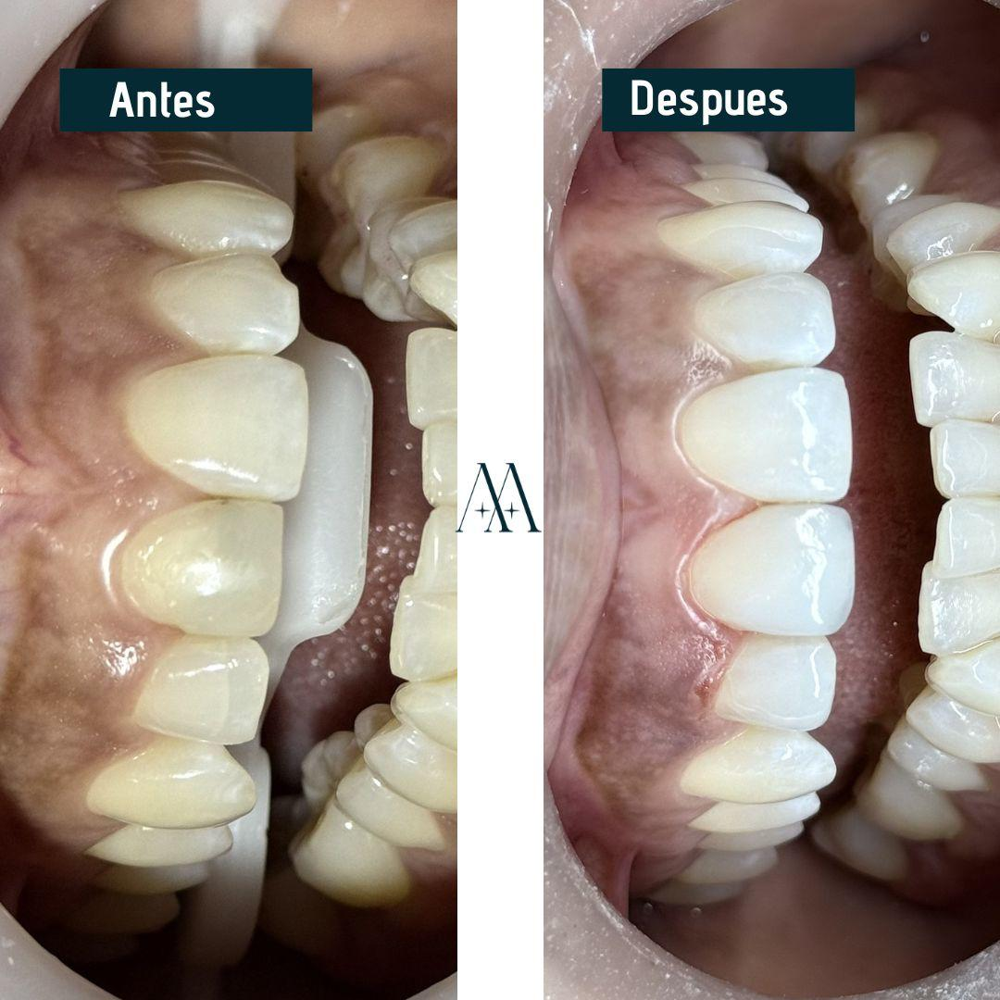
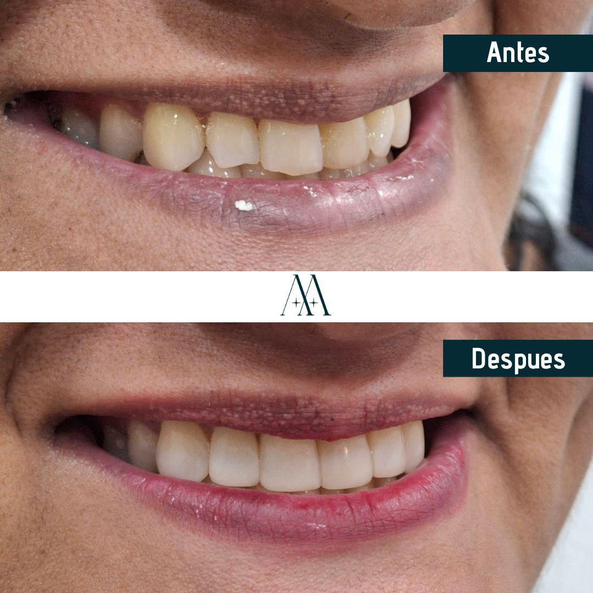

Habitualmente me encuentro con personas que han dejado pasar años sin visitar al odontólogo debido al temor o experiencias negativas anteriores. Comprendo perfectamente esta situación. Por tal motivo, establecimos un ambiente donde cada paciente se sienta valorado, considerado y tranquilo desde que llega. Lo que me apasiona de esta profesión es que sobrepasa simplemente corregir dientes: implica recuperar seguridad en uno mismo, aliviar molestias que impactan tu rutina diaria, y permitirte sonreír sin dudarlo. Aquí no apenas contarás con equipamiento moderno y servicios al día, sino con especialistas que verdaderamente se interesan en tu salud integral. Al fin de cuentas, una dentadura saludable es el fundamento para una existencia más completa.
Agenda tu cita
Conoce Nuestras Instalaciones
Nuestras Especialidades

¿Sabías que una oclusión defectuosa puede generar dolores de cabeza persistentes? Como especialista en ortodoncia, me concentro no únicamente en que tus dientes luzcan atractivos, sino en resolver inconvenientes funcionales que influyen en tu bienestar cotidiano. Numerosos pacientes quedan sorprendidos al descubrir que su dolor articular o ese ruido al abrir la boca tienen alternativa de tratamiento. Nos valemos de brackets convencionales, opciones estéticas y aparatología invisible, buscando constantemente lo que se acople mejor a tu estilo de vida y economía.
Ver más
Si durante la higiene bucal observas sangrado en las encías, te pido que no lo consideres algo trivial. En mi especialidad de periodoncia, presencio cotidianamente cómo la patología de las encías avanza de manera silenciosa hasta amenazar dientes completamente íntegros. Afortunadamente, cuando se identifica temprano, presenta un pronóstico favorable. Empleamos metodologías actualizadas que disminuyen la incomodidad y facilitan la cicatrización. Nuestra meta permanente es resguardar tus piezas dentarias naturales y preservar la salud de tus encías con aspecto firme y saludable.
Ver más
Siempre que un paciente recupera su capacidad de alimentarse libremente o vuelve a expresar su sonrisa sin restricciones, siento que cumplo adecuadamente. En mi especialidad de prostodoncia, me dedico a recuperar la funcionalidad y belleza estética cuando existen ausencias de una o múltiples piezas. La implantología ha transformado enormemente este campo: lucen, se perciben y actúan idénticamente a tus dientes naturales. De igual manera trabajo con reconstrucciones, puentes y dentaduras totales, siempre elaboradas específicamente para que no se advierta que no son tus dientes naturales.
Ver más
Brindamos servicios desde los miembros más jóvenes de la familia hasta los adultos mayores, porque el cuidado dental es una responsabilidad constante. Nuestras instalaciones proporcionan desde procedimientos profilácticos hasta intervenciones cosméticas incluyendo decoloración y restauraciones laminares. Lo más apreciado por nuestros usuarios es prescindir de desplazarse a múltiples sitios: resolvemos todo internamente. Si identificamos algo que precisa un especialista específico, te acompañamos durante el proceso sin abandonarte.
Ver más8:00 AM - 6:00 PM
8:00 AM - 6:00 PM
8:00 AM - 6:00 PM
8:00 AM - 6:00 PM
8:00 AM - 6:00 PM
8:00 AM - 1:00 PM
Cerrado
Cra 24a#33b132. 2do piso
Santa Mónica Popular, Cali, Valle del Cauca